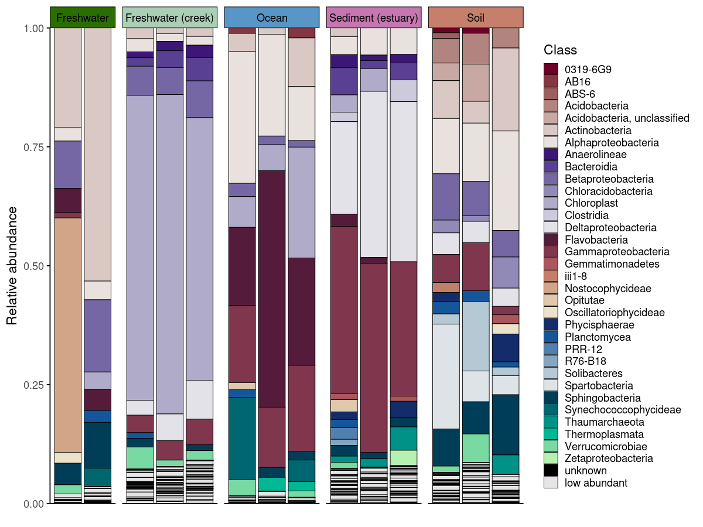
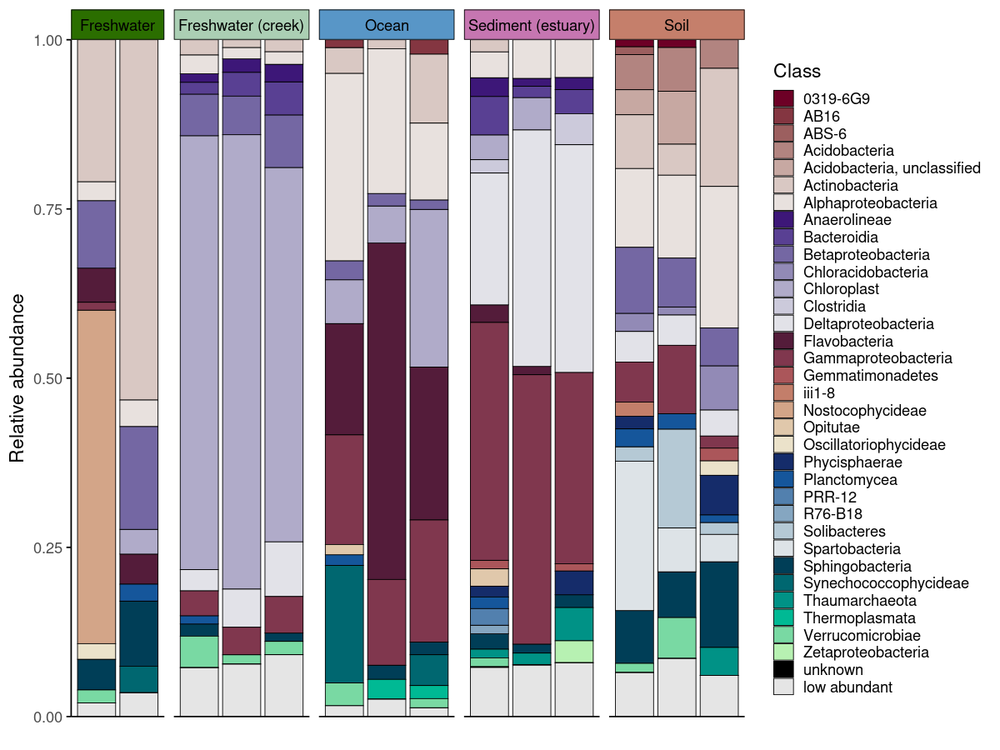
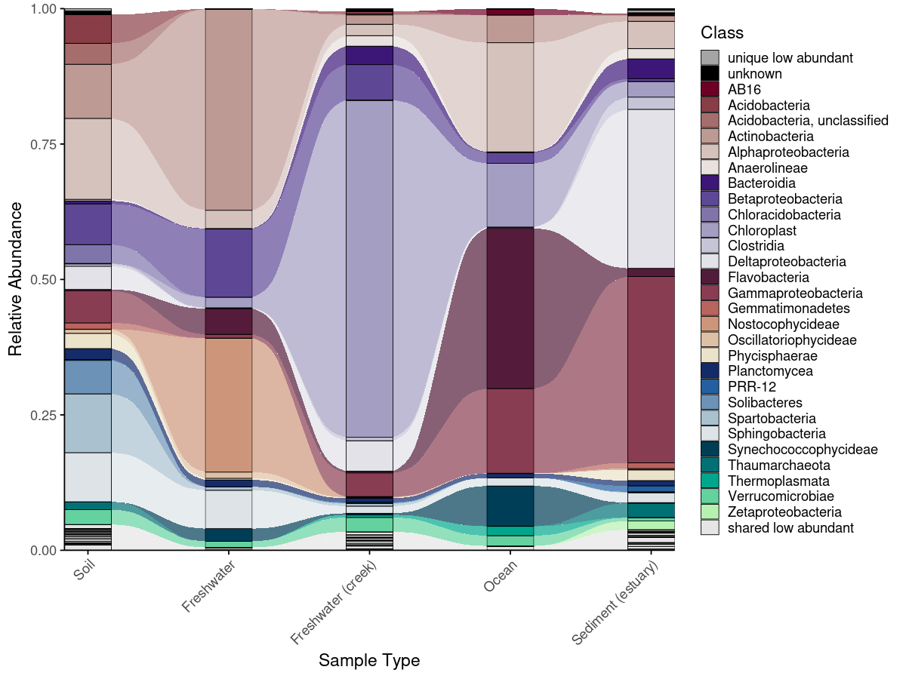
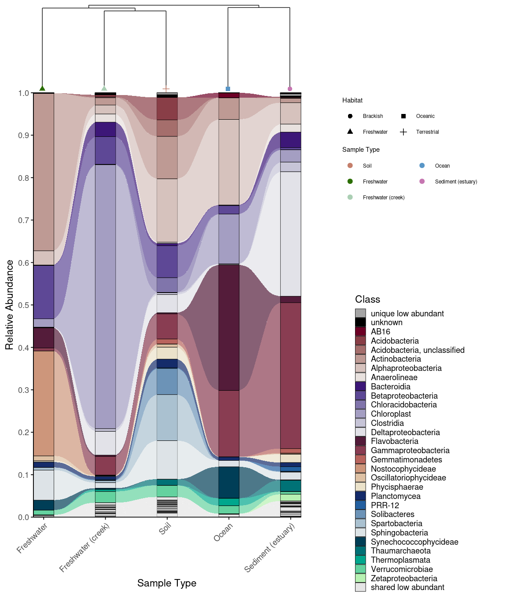

Taxonomic color palettes, alluvial plots, and dendrograms for microbiome data
📖 Documentation: https://mwslawinska.github.io/phyloPal
📖 Vignette: https://mwslawinska.github.io/phyloPal/articles/introduction.html
Overview
phyloPal makes it easy to create publication-ready microbiome visualizations:
- 🎨 Perceptually uniform HCL palettes with optional hierarchical grouping by higher taxonomy — suitable for data with many taxonomic groups
- 📊 Taxonomic barplots with colored facet strips — no more fighting with
ggh4xmanually - 🌊 Alluvial plots that correctly classify taxa as shared, unique, or mixed-abundance across groups
- 🌳 Combined alluvial + dendrogram layouts for showing beta diversity structure and taxonomic composition in one figure
- 🧹 Taxonomy cleaning that handles Incertae Sedis and propagates parent taxa to fill missing levels automatically
A full tutorial covering all workflows — data aggregation, palette generation, barplots, alluvial plots, and combined alluvial + dendrogram figures — is available in the online vignette.
After installation, it is also accessible locally:
browseVignettes("phyloPal")
vignette("introduction", package = "phyloPal")Installation
# install.packages("devtools")
devtools::install_github("mwslawinska/phyloPal")Example data
phyloPal includes a built-in example dataset derived from the GlobalPatterns dataset (Caporaso et al., 2011) filtered to five habitat types (Terrestrial, Oceanic, Freshwater, Brackish, Freshwater creek). All examples in the documentation use this dataset.
Workflows
Taxonomic barplots with colored facet strips
Generating publication-ready barplots for microbiome data involves two challenges: choosing colors that are perceptually uniform across many taxa, and communicating sample grouping structure without cluttering the figure. phyloPal addresses both.
generate_palette_hcl() generates HCL (Hue-Chroma-Luminance) palettes specifically suited for taxonomic data — perceptually uniform across many colors, with fixed colors for special categories like "low abundant" and "unknown" always placed consistently. Optional hierarchical grouping assigns colors from the same family to taxa sharing a higher-level group (e.g. all Proteobacteria in blue tones), making the biological structure of the community visible at a glance.
Colored facet strips add a second layer of grouping information without an extra legend. If samples are faceted by SampleType but habitat membership should also be visible, coloring the strips by habitat lets the reader group panels visually — all freshwater panels share one color, all oceanic panels another. generate_grouped_palette() produces this palette in one call, and passing it to facet_strip_colors in plot_taxonomic_barplot() applies it automatically — something that otherwise requires verbose ggh4x boilerplate.
process_barplot_data() handles aggregation and low-abundance grouping before plotting. The keep_ratype argument controls this: - "collapse" (simpler): all taxa below the threshold are relabelled as “low abundant” and merged into a single bin. This keeps the plot clean and is the right choice when you only care about the dominant taxa. - "separate": low-abundance taxa are flagged but their original identity is preserved in a <tax_level>_original column. The plot-level label becomes "low abundant", but the true taxon name is retained for downstream use.
Both approaches are shown below.
em_barplot_processed <- process_barplot_data(
em_cleaned,
tax_level = "Class",
group_vars = c("SampleType", "SampleID", "Habitat"),
low_abundance_basis = "per_sample",
low_abundance_threshold = 0.01,
agg_fun = "sum",
keep_ratype = "separate",
clean_taxonomy = FALSE
)
# Palette for taxa
barplot_pal <- generate_palette_hcl(
data = em_barplot_processed,
tax_level = "Class",
fixed_colors_enabled = TRUE,
fixed_colors_position = "end",
palette_list = c("Reds", "Purples", "BrwnYl", "Blues", "TealGrn"),
cmax = 65,
luminance = c(20,90),
power = 1.2,
shuffle = FALSE)
# Palette for facet strips — same color family per habitat
habitat_palette <- generate_grouped_palette(
data = em_cleaned,
group_col = "Habitat",
item_col = "SampleType",
palette_map = list(
"Terrestrial" = "BrwnYl",
"Oceanic" = "Blues",
"Freshwater" = "Greens",
"Brackish" = "PuRd"
),
luminance = 65,
power = 1.2
)
# Plot
plot_taxonomic_barplot(
data = em_barplot_processed,
tax_level = "Class",
palette = barplot_pal,
x_axis_var = "SampleID",
facet_by = "SampleType",
facet_strip_colors = habitat_palette,
theme_obj = theme_phylopal()
) +
guides(
fill = guide_legend(
ncol = 1
)
) 
plot_taxonomic_barplot(
data = em_barplot_processed2,
tax_level = "Class",
palette = barplot_pal,
x_axis_var = "SampleID",
facet_by = "SampleType",
facet_strip_colors = habitat_palette,
theme_obj = theme_phylopal()
) +
guides(
fill = guide_legend(
ncol = 1
)
) 
Alluvial plots
Alluvial plots show how taxonomic composition changes across groups — which taxa are present everywhere, which are unique to one condition, and which shift in abundance between groups. phyloPal automatically classifies taxa as shared abundant, shared low abundant, unique abundant, unique low abundant, or shared mixed abundance (abundant in some groups, low in others). These categories determine both the color assigned to each taxon and its stacking position — shared taxa appear at the bottom, unique taxa toward the top, and fixed categories like "unknown" and "low abundant" always occupy consistent positions.
The full workflow runs in four steps (prepare_alluvial_data() → classify_taxa_patterns() → generate_alluvial_palette() → plot_alluvial()), or in a single call via create_alluvial_plot().
# arrange the SampleType like you want
example_microbiome$SampleType <- factor(example_microbiome$SampleType,
levels = unique(example_microbiome$SampleType))
# prepare alluvial data
em_allu <- prepare_alluvial_data(example_microbiome,
tax_level = "Class",
group_col = c("SampleType"),
clean_taxonomy = TRUE
)
# classify taxa patterns according to their abundance
em_allu_classified <- classify_taxa_patterns(
data = em_allu,
tax_level = "Class",
group_col = c("SampleType")
)
# generate palette for the alluvial plot
allu_pal <- generate_alluvial_palette(
data = em_allu_classified,
palette_list = c("Reds", "Purples", "BrwnYl", "Blues", "TealGrn"),
cmax = 65,
luminance = c(20,90),
power = 1.2,
)
plot_alluvial(em_allu_classified,
custom_palette = allu_pal,
tax_level = "Class",
group_col = "SampleType",
theme_obj = theme_phylopal(),
line_width = 0.2,
x_axis_label = "Sample Type"
) +
theme(axis.text.x = element_text(angle = 45, hjust = 1)) +
guides(
fill = guide_legend(
ncol = 1
)
)
# Or in one call
create_alluvial_plot(
data = example_microbiome,
tax_level = "Class",
group_col = "SampleType",
prepare_args = list(clean_taxonomy = TRUE),
palette_list = c("Reds", "Purples", "BrwnYl", "Blues", "TealGrn"),
palette_args = list(
cmax = 65,
luminance = c(20, 90),
power = 1.2
),
plot_args = list(
theme_obj = theme_phylopal(),
line_width = 0.2,
x_axis_label = "Sample Type"
)
) +
ggplot2::theme(axis.text.x = ggplot2::element_text(angle = 45, hjust = 1, vjust = 1)) +
ggplot2::guides(fill = ggplot2::guide_legend(ncol = 1))
Combined alluvial + dendrogram
An alluvial plot shows what is in each group — but not how similar the groups are to each other overall. Combining it with a Bray-Curtis dissimilarity dendrogram (computed via the vegan package; Oksanen et al., 2022) lets the reader interpret compositional patterns in the context of community-level relationships: groups that cluster closely in the dendrogram are expected to share more taxa in the alluvial plot, and deviations from this expectation become immediately visible. combine_dendrogram_alluvial() stacks the two plots vertically and aligns their x-axes to the dendrogram leaf order automatically — without this alignment, the two plots would use independent orderings and the visual connection between them would be lost.
A practical challenge in combining these plots is that dendrogram tips rarely fall exactly at integer x positions, creating a subtle misalignment with the alluvial columns beneath them. dend_limits_left and dend_limits_right allow precise independent control of the left and right edges of the dendrogram panel, nudging the tips into exact alignment with the alluvial columns — something that is otherwise surprisingly difficult to achieve with standard ggplot2 tools.
Increasing dend_limits_left adds space on the left side of the dendrogram panel, pushing the leftmost tip further left — away from the first alluvial column. Increasing dend_limits_right reduces space on the right side, pushing the rightmost tip leftward — toward the center and away from the last alluvial column. The two parameters therefore behave asymmetrically: dend_limits_left pulls the left tip outward, while dend_limits_right pulls the right tip inward. The correct values depend on the number of groups and the specific clustering, so some manual adjustment is expected and normal. For vertical dendrograms, use dend_limits_top and dend_limits_bottom instead.
A convenience wrapper create_alluvial_dendrogram_plot() runs the full pipeline from raw ASV/OTU matrix to combined figure in a single call.
# Build dendrogram
em_otu_grouped <- create_grouped_matrix(
asv_matrix = em_otu,
metadata = em_metadata,
sample_col = "SampleID",
group_col= "SampleType",
group_order = "metadata"
)
em_dendrogram <- build_dendrogram(
mat = em_otu_grouped,
distance_method = "bray",
cluster_method = "ward.D2"
)
em_dendrogram_plot <- plot_dendrogram(
dend = em_dendrogram,
metadata = em_metadata,
label_from = "SampleType",
color_by = "SampleType",
color_palette = habitat_palette,
point_size = 2,
orientation = "top",
shape_by = "Habitat",
theme_obj = theme_void() + theme(text = element_text(size = 7, color = "black"),
legend.title = element_text(size = 7, color = "black"),)
)
# Plot alluvial
p_allu4dend <- create_alluvial_plot(
data = example_microbiome,
tax_level = "Class",
group_col = "SampleType",
prepare_args = list(clean_taxonomy = TRUE),
palette_list = c("Reds", "Purples", "BrwnYl", "Blues", "TealGrn"),
palette_args = list(
cmax = 65,
luminance = c(20, 90),
power = 1.2
),
plot_args = list(
theme_obj = theme_phylopal(),
line_width = 0.2,
x_axis_label = "Sample Type"
)
) +
ggplot2::theme(axis.text.x = ggplot2::element_text(angle = 45, hjust = 1)) +
ggplot2::guides(fill = ggplot2::guide_legend(ncol = 1))
combine_dendrogram_alluvial(
alluvial_plot = p_allu4dend +
scale_y_continuous(expand = c(0,0), breaks = seq(0,1,0.1), limits = c(0,1))+
ggplot2::guides(fill = guide_legend(ncol =1, title = "Class")),
dendrogram_plot = em_dendrogram_plot +
ggplot2::guides(color = guide_legend(ncol = 2, title = "Sample Type"), shape = guide_legend(ncol = 2)),
dend_position = "top",
dend_height = 0.15,
strip_alluvial_x = FALSE,
legend = "separate",
legend_source = "both",
legend_position = "right",
legend_rel_width = 0.75,
alluvial_margins = ggplot2::margin(0, 0, 0, 0, unit = "cm"),
dendrogram_margins = ggplot2::margin(0, 0, 0.15, 0, unit = "cm"),
outer_margins = ggplot2::margin(0.2, 0.2, 0.2, 0.2, unit = "cm"),
align = "panel",
x_expand_zero = TRUE,
align_x_centers = TRUE,
leaf_order = em_dendrogram$order,
overwrite_x_scales = TRUE,
dend_limits_left = 0.4,
dend_limits_right = 0.18
) 
Convenience wrapper
create_alluvial_dendrogram_plot() runs the full pipeline — grouping the ASV/OTU matrix, building the dendrogram, preparing and classifying alluvial data, generating the palette, and combining the plots — in a single call. Arguments for each internal step are passed as named lists (build_dendrogram_args, plot_dendrogram_args, and alluvial_args with nested prepare_args, classify_args, palette_args, plot_args). Layout parameters like dend_limits_left, dend_limits_right, and legend_rel_width are direct arguments rather than nested, since they are commonly adjusted. The function returns a named list containing all intermediate objects (grouped_matrix, dendrogram, dendrogram_plot, alluvial, combined_plot), so any component can be accessed without rerunning the pipeline.
res <- create_alluvial_dendrogram_plot(
asv_matrix = em_otu,
metadata = em_metadata,
sample_col = "SampleID",
group_col = "SampleType",
alluvial_data = example_microbiome,
tax_level = "Class",
dend_color_palette = habitat_palette,
dend_shape_by = "Habitat",
theme_alluvial = theme_phylopal(),
theme_dendrogram = ggplot2::theme_void(),
alluvial_args = list(
return_all = TRUE,
prepare_args = list(clean_taxonomy = TRUE),
classify_args = list(low_abundance_threshold = 0.01),
palette_args = list(
palette_list = c("Reds", "Purples", "BrwnYl", "Blues", "TealGrn"),
cmax = 65,
luminance = c(20, 90),
power = 1.2
),
plot_args = list(
line_width = 0.2,
x_axis_label = "Sample Type"
)
),
post_plot_guides = list( # guides applied to alluvial
fill = ggplot2::guide_legend(ncol = 1, title = "Class")
),
dend_limits_left = 0.4,
dend_limits_right = 0.18,
combine_args = list(
legend_rel_width = 0.5,
strip_alluvial_x = TRUE,
alluvial_margins = ggplot2::margin(0, 0, 0, 0, unit = "cm"),
outer_margins = ggplot2::margin(0.2, 0.5, 0.2, 0.2, unit = "cm")
)
)
res$combined_plotFunction reference
| Function | What it does |
|---|---|
replace_incertae_sedis_NAs() |
Clean taxonomy: normalize Incertae Sedis, propagate parent taxa |
process_barplot_data() |
Aggregate ASV-level RA, mark low-abundance taxa |
prepare_alluvial_data() |
Aggregate and complete zeros for alluvial input |
classify_taxa_patterns() |
Classify taxa as shared/unique/mixed-abundance |
generate_palette_hcl() |
HCL palette with optional hierarchical grouping |
generate_grouped_palette() |
Assign color families to groups |
generate_alluvial_palette() |
Alluvial-aware palette |
add_alpha() |
Add transparency to hex colors |
plot_taxonomic_barplot() |
Stacked barplot with optional colored facet strips |
plot_alluvial() |
Alluvial/Sankey plot |
build_dendrogram() |
Compute Bray-Curtis dendrogram |
plot_dendrogram() |
Plot dendrogram with metadata-colored labels |
combine_dendrogram_alluvial() |
Combine alluvial + dendrogram |
create_alluvial_plot() |
Full alluvial workflow wrapper |
create_alluvial_dendrogram_plot() |
Full alluvial + dendrogram wrapper |
theme_phylopal() |
Clean built-in ggplot2 theme |
References
Caporaso, J.G., et al. (2011). Global patterns of 16S rRNA diversity at a depth of millions of sequences per sample. PNAS, 108, 4516–4522.
Oksanen, J., et al. (2022). vegan: Community Ecology Package. R package version 2.6-4. https://CRAN.R-project.org/package=vegan